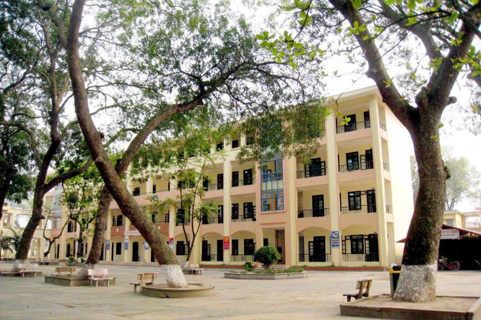

Trường THPT Dương xá nằm trên địa phận xã Dương xá - huyện Gia Lâm – Thành phố Hà Nội-mảnh đất có truyền thống hiếu học và từng nổi tiếng với danh nhân Nguyên Phi Ỷ Lan thời Lý.
Trường THPT Dương xá nằm trên địa phận xã Dương xá - huyện Gia Lâm – Thành phố Hà Nội-mảnh đất có truyền thống hiếu học và từng nổi tiếng với danh nhân Nguyên Phi Ỷ Lan thời Lý.
Xã Dương xá nằm trên trục giao thông Quốc lộ 5, thuận tiện về giao thông, giao lưu giữa các vùng miền của huyện Gia Lâm với Tỉnh Hưng Yên, Bắc Ninh, là nơi tập trung đông dân cư và khu công nghiệp vừa của Thành phố Hà Nội. Xã Dương xá là một xã mạnh về kinh tế, ổn định về an ninh – quốc phòng và có truyền thống hiếu học. Hiện nay trên địa bàn xã có một hệ thống giáo dục liên trường: Mầm non – Tiểu học – THCS – THPT ở trên cùng một vị trí đã tạo nên một quần thể giáo dục để cùng phối kết hợp với nhau trong việc giáo dục toàn diện cho học sinh, công tác xã hội hoá giáo dục được thuận lợi.
Trường THPT Dương xá tuyển sinh số học sinh khu vực Nam Đuống của huyện Gia Lâm ( Gồm 7 xã: Dương xá, Phú Thị, Đặng xá, Dương Quang, Kim Sơn, Lệ Chi, Kiêu Kỵ) và dọc tuyến đường Quốc lộ 5. Số lượng học sinh đông, trước đây là khu vực thuần nông nhưng một số năm gần đây có tốc độ đô thị hoá nhanh. Hầu hết học sinh trên địa bàn đều ngoan và có ý thức, động cơ mục đích học tập rất rõ ràng. Cha mẹ học sinh đã có ý thức quan tâm và đầu tư cho con em học tập.
Quá trình phát triển của trường qua từng giai đoạn:
Trường cấp III Dương xá ( nay là trường THPT Dương xá) được thành lập vào tháng 9/1971 được tách ra từ trường cấp III Cao Bá Quát đến nay đã được 38 năm xây dựng và trưởng thành. Khi đó trường có 9 lớp ( 4 lớp 8; 3 lớp 9; 2 lớp 10) với tổng số 425 học sinh. Tổng số giáo viên là 26 do thầy Phan Trí là quyền Hiệu trưởng. Trường học nhờ trường cấp II Dương xá ( Trường cấp II Dương xá học ca sáng, Trường cấp III Dương xá học ca chiều), cơ sở vật chất của nhà trường thiếu thốn, nghèo nàn.
Năm 1972, cuộc kháng chiến chống Mỹ cứu nước bước vào giai đoạn gay go, ác liệt khi Đế quốc Mỹ leo thang đánh phá miền Bắc, thầy và trò nhà trường phải sơ tán, phải chia nhỏ lớp để học nhờ trong nhà dân thuộc xã Dương Xá, huyện Gia Lâm, Hà Nội.
Từ năm 1974 đến năm 1979, thầy Nguyễn Trọng Tú là quyền hiệu trưởng nhà trường. Trường có 13 phòng học cấp 4 nên phải học chung, học nhờ Trường Cấp I, II Dương Xá.
Tháng 7 năm 1978, được sự quan tâm của Sở GD&ĐT Hà Nội, UBND Huyện Gia Lâm, UBND xã Dương Xá, Trường Cấp III Dương Xá được chuyển đến địa điểm mới chính thức như ngày nay.Trường do thầy Nguyễn Văn Nhung là quyền hiệu trưởng.
Từ tháng 9/ 1979,Trường Cấp III Dương Xá đã có cơ ngơi mới với diện tích 10.012m2 bao gồm 2 dãy phòng học cấp 4 ( Gồm 10 phòng học) và 1 dãy nhà Hiệu bộ cấp 4 .Thầy Nguyễn Hữu Vỵ là hiệu trưởng nhà trường.
Năm học 1979 – 1980 Trường cấp III Dương Xá có 15 lớp ( 5 lớp 8; 5 lớp 9; 5 lớp 10) với tổng số 680 học sinh. Số giáo viên là: 32 và số cán bộ nhân viên: 8. Thời gian này đất nước vừa kết thúc chiến tranh, kinh tế gặp nhiều khó khăn nên điều kiện đầu tư cho giáo dục hạn chế, nhưng trong thời gian 10 năm , từ năm 1979 đến 1989, Nhà trường đã đào tạo được 2580 học sinh.
Từ năm 1990 – 1996, thầy Đào Bình Lựu là hiệu trưởng nhà trường. Năm học 1993 – 1994 Trường được đầu tư đáng kể về cơ sở vật chất, khung cảnh sư phạm ngày càng khanh trang. Nhà trường có: 1 dãy nhà Hiệu bộ 2 tầng với đầy đủ các phòng chức năng và phòng làm việc, 1 dãy lớp học mái bằng 1 tầng gồm 7 phòng học, 1 dãy lớp học 2 tầng gồm 10 phòng học. Bắt đầu thời gian này trở đi qui mô nhà trường đã được phát triển, cơ sở vật chất đã được đầu tư nên chất lượng giáo dục của trường đã ngày càng ổn định và có những bước phát triển tốt. Trong thời gian này số lớp học sinh luôn là 33 lớp ( cả hệ A và B) với số lượng học sinh khoảng 1.600 học sinh.
Từ năm học 1997-2002, thầy Nguyễn Sỹ Hoan là hiệu trưởng nhà trường. Thời gian này, cơ sở vật chất của nhà trường đã tương đối đầy đủ, đáp ứng được yêu cầu dạy học, nên nhà trường đã tập trung vào việc nâng cao chất lượng giáo dục.
Từ năm 2002 đến nay, thầy Nguyễn Đắc Hồi là hiệu trưởng nhà trường. Nhà trường đặc biệt chú trọng đến việc đầu tư nâng cao chất lượng giáo dục, chất lượng văn hoá đã được nâng cao từng bước một cách vững chắc. Tỷ lệ học sinh Khá, Giỏi, học sinh thi đỗ vào các trường Cao đẳng và Đại học cao, nhiều em đỗ Thủ khoa vào trường Đại học, đạt điểm tuyệt đối 30/30.
Năm 2007 – 2008: Được sự quan tâm của Đảng ủy-UBND xã Dương xá, Đảng uỷ – UBND huyện Gia Lâm, Sở Giáo dục & Đào tạo Thành phố Hà Nội, UBND Thành phố Hà Nội, nhà trường đã xin thêm được 6.227m2 đất liền kề với trường để mở rộng trường với tổng diện tích là 16.239m2. Trường đã được Sở Giáo dục & Đào tạo, UBND Thành phố đầu tư dự án xây dựng, cải tạo trường gồm: xây phòng học 4 tầng gồm 12 phòng học và 7 phòng chức năng, cải tạo nhà Hiệu bộ và cải tạo dãy phòng học 2 tầng, xây dựng khu Giáo dục Thể chất. Hiện nay trường có đầy đủ các phòng học và các phòng chức năng. Cụ thể: với 21 phòng học, 8 phòng chức năng (1 phòng Vật lý, 1 phòng Hoá học, 1 phòng Sinh vật, 1 phòng học Ngoại ngữ, 1 phòng đa năng, 2 phòng vi tính học sinh, 1 phòng đồ dùng dạy học). Các trang thiết bị, đồ dùng dạy học đầy đủ, hiện đại đáp ứng được yêu cầu dạy - học trong Chương trình đổi mới giáo dục hiện nay.
Từ năm học 1990 -1991 cho đến nay trường luôn được công nhận là trường Tiên tiến và trường Tiên tiến Xuất sắc của Thành phố. Chi bộ Đảng luôn được công nhận là Chi bộ trong sạch, vững mạnh. Trường luôn được công nhận trường Tiên tiến xuất sắc của Thành phố về Thể dục Thể thao. Đoàn thanh niên nhà trường luôn được công nhận cơ sở Đoàn vững mạnh cấp Thành đoàn và TW Đoàn. Công đoàn nhà trường luôn được công nhận là đơn vị tiên tiến xuất sắc của Thành phố.
Tháng 3 năm 2009, Trường được công nhận là Trường chuẩn Quốc gia.
Với những bước phát triển nhanh chóng và vững chắc, Trường THPT Dương Xá ngày càng có vị thế vững chắc trong khối các trường THPT của Thành phố Hà Nội và đặc biệt dành được sự tin tưởng của Học sinh và Cha mẹ học sinh. Bước vào năm học tới, Trường hướng tới kỷ niệm 40 năm thành lập trường, Thầy và trò nhà trường đang ra sức thi đua phấn đấu để Trường THPT Dương Xá luôn xứng đáng với Danh hiệu Trường chuẩn Quốc gia, một địa chỉ tin cậy đối với nhân dân và học sinh trong khu vực Long Biên – Gia Lâm.